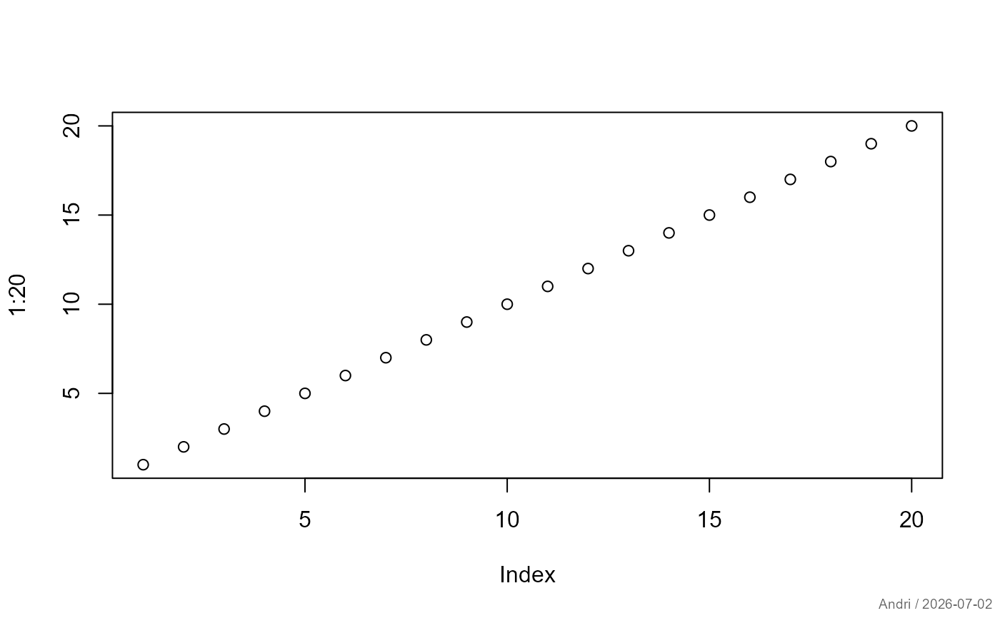

Stamp the current plot in the extreme lower right corner. A free text or expression can be defined as text to the stamp.
Arguments
- text
Character string, expression, or toggle controlling the stamp text.
.useTheme(default) orTRUEresolve togetTheme()$stamp, evaluated lazily at draw time.FALSE,NULL, orNAsuppress the stamp. Any other string or unevaluatedexpression()is used as given.- las
orientation; see
par.NULL(default) inherits the currentpar("las").las = 3places the stamp vertically along the right edge instead of horizontally along the bottom.- cex, col
size and color of the stamp text.
Details
The text can be freely defined as option. If user and date should be included by default, the following option using an expression will help:
setDescToolsXOption(stamp=expression(gettextf('
Sys.getenv('USERNAME'), Today() )))For R results may not be satisfactory if par(mfrow=) is in effect.
See also
Other graphics.utils:
abcCoords(),
axisBreak(),
barText(),
boxedText(),
colLegend(),
degToRad(),
errBars(),
lineSep(),
lineToUser(),
lines.lm(),
mar(),
preview(),
spreadOut(),
textLegend(),
titleRect(),
unit()
Examples
plot(1:20)
stamp()
